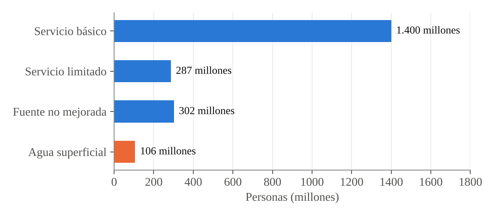
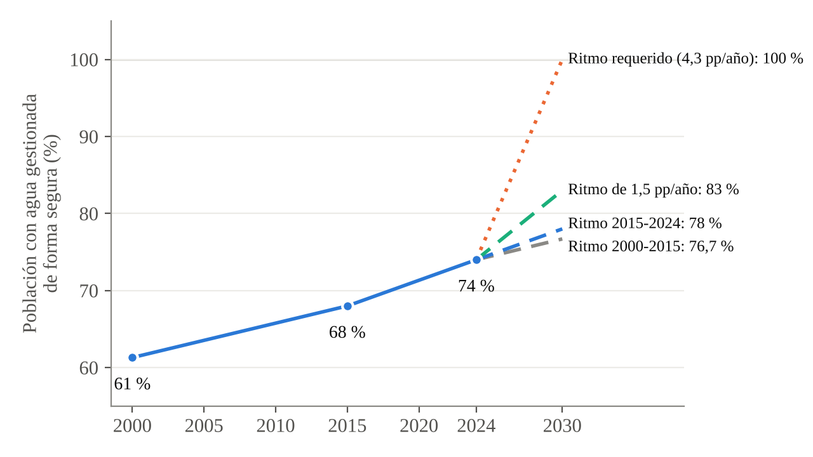
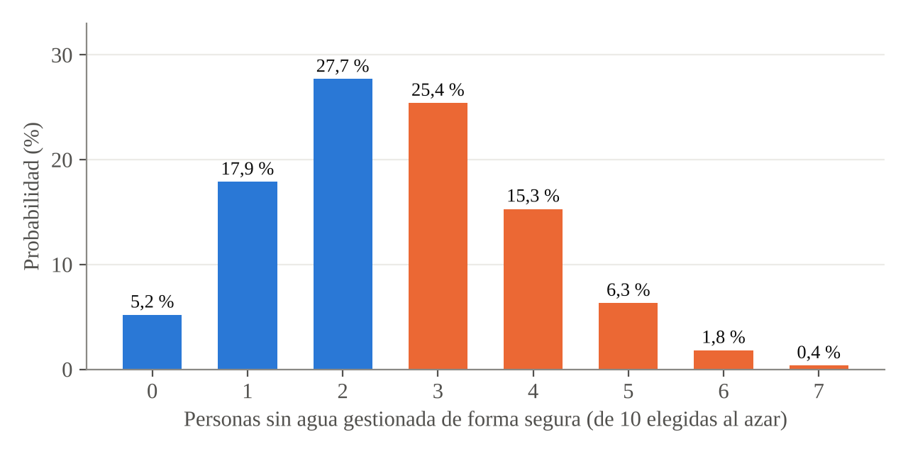

De cada 100 personas, 26 no tienen agua potable segura
Portafolio del proyecto Aplicación del razonamiento cuantitativo a problemáticas globales desde la dinámica del Modelo de Naciones Unidas (MUN). Analizo el acceso al agua con números, gráficas y probabilidad, y lo llevo a una resolución diplomática.
74 de 100 en 2024
Cada cuadro representa a 1 de cada 100 personas del mundo. Cifras redondeadas de OMS y UNICEF (2025).
Metas
Me puse una meta por cada eje del pensamiento matemático que pide el proyecto, y una cuarta que las junta en la resolución.
- Analizar con indicadores numéricos cuántas personas no tienen agua potable gestionada de forma segura, cómo se reparten por nivel de servicio y qué tan rápido está cambiando la cobertura.
- Representar con gráficas la tendencia de la cobertura y resolver un problema geométrico real: dimensionar una cisterna de captación de lluvia para una vivienda.
- Medir con probabilidad y escenarios qué tan incierto es llegar a la meta de 2030 y qué cambiaría con un ritmo de avance distinto.
- Convertir esos resultados en una propuesta de resolución al estilo MUN, con medidas viables y justas para países de realidades distintas.
Planteamiento del problema
¿Qué ritmo de avance necesita la cobertura mundial de agua potable segura para cumplir la meta de 2030, y cómo debería repartirse el esfuerzo para que llegue primero a quienes más lo necesitan?
La meta de los Objetivos de Desarrollo Sostenible es que en 2030 todas las personas tengan agua potable segura. Entre 2015 y 2024 la cobertura mundial subió de 68 % a 74 % y 961 millones de personas ganaron acceso, pero todavía quedan 2.100 millones sin él, incluidos 106 millones que beben de fuentes superficiales sin tratar (OMS y UNICEF, 2025).
El promedio esconde diferencias grandes. En los países menos adelantados la probabilidad de carecer de agua y saneamiento básicos es más del doble que en el resto, y en los contextos frágiles la cobertura es 38 puntos porcentuales (pp) menor. En el campo la cobertura pasó de 50 % a 60 % entre 2015 y 2024, mientras que en las ciudades se estancó (UNICEF, 2025).
Las variables que puedo medir son la cobertura (%), el número de personas sin servicio, el ritmo de avance (pp por año), la brecha rural frente al promedio mundial y el volumen de agua por persona (litros por día).
| Indicador | Valor | Fuente |
|---|---|---|
| Población mundial (2024) | 8.200 millones | OMS y UNICEF (2025) |
| Cobertura de agua gestionada de forma segura (2015 y 2024) | 68 % y 74 % | OMS y UNICEF (2025) |
| Personas sin agua gestionada de forma segura (2024) | 2.100 millones | OMS y UNICEF (2025) |
| Personas que ganaron acceso entre 2015 y 2024 | 961 millones | OMS y UNICEF (2025) |
| Reducción de personas sin acceso desde 2015 | 270 millones | OMS y UNICEF (2025) |
| Cobertura rural (2015 y 2024) | 50 % y 60 % | UNICEF (2025) |
| Cobertura en contextos frágiles frente al resto | 38 pp menos | UNICEF (2025) |
| Personas en países con estrés hídrico | Más de 2.000 millones | ONU-Agua (2025b) |
pp = puntos porcentuales.
Preguntas orientadoras
Organicé las preguntas según el eje que ayuda a responderlas.
Eje numérico
- ¿Qué indicadores muestran mejor el tamaño del problema: el porcentaje de cobertura, el número de personas sin servicio o el ritmo anual de avance?
- ¿Qué parte de quienes no tienen agua segura ya usa un servicio básico y qué parte depende de fuentes superficiales?
Eje geométrico
- ¿Cómo se ven las tendencias de la cobertura en una gráfica y qué pendiente exige la meta de 2030?
- ¿Qué dimensiones debería tener una cisterna de captación de lluvia para cubrir las necesidades de una vivienda?
Eje aleatorio
- Si elijo personas al azar en el mundo, ¿qué probabilidad hay de que varias de ellas no tengan agua segura?
- ¿Qué tan seguro puedo estar de las cifras y de las proyecciones, si los propios informes las revisan de una edición a otra?
Resolución
- ¿Qué compromisos concretos y medibles podrían aprobar países con realidades tan distintas?
Procesos y productos
Trabajé en cinco semanas, siguiendo el calendario del curso. Los datos salen de informes de la OMS, UNICEF, ONU-Agua y la UNESCO, y los pasé a tablas para calcular con ellos. Los cálculos y las gráficas los hice con Python. Para las proyecciones usé un modelo lineal, que supone un ritmo de avance constante.
| Semana | Qué se hace | Evidencia |
|---|---|---|
| 1 | Definir metas, problema y preguntas orientadoras; confirmar el país asignado | Metas, problema y país asignado (secciones de arriba) |
| 2 | Buscar y organizar los datos en tablas | Tabla de indicadores con sus fuentes |
| 3 | Análisis numérico, geométrico y aleatorio | Cálculos, gráficas, cisterna y calculadoras |
| 4 | Redactar el informe y la resolución; entregar el portafolio | Informe en Word y borrador de resolución |
| 5 | Presentación en la simulación MUN | Presentación y registro de la sesión |
Productos
- Informe analítico en Word, con normas APA: descargar el informe.
- Propuesta de resolución diplomática, en la sección Resolución de esta página.
- Este portafolio virtual, que se entrega al terminar la semana 4.
- Presentación oral en la sesión plenaria de la semana 5.
Análisis cuantitativo
Cada eje responde a una de las preguntas orientadoras. Los cálculos van paso a paso y hay tres calculadoras para cambiar los supuestos y ver qué pasa.
Eje numérico: niveles de servicio y ritmo de avance
Para saber cuánto pesa cada grupo, divido sus personas entre la población mundial de 2024 (8.200 millones).
Con el mismo procedimiento, el servicio limitado (287 millones) pesa 3,5 %, las fuentes no mejoradas (302 millones) 3,7 % y el agua superficial (106 millones) 1,3 %. Los cuatro grupos suman 2.095 millones, que redondeados son los 2.100 millones del informe (OMS y UNICEF, 2025).

Dos de cada tres personas sin agua segura (1.400 ÷ 2.095 ≈ 66,8 %) ya tienen un servicio básico. Para ellas el paso pendiente parece ser mejorar la calidad y la disponibilidad de lo que ya existe, más que empezar desde cero.
El ritmo de avance es el cambio en la cobertura dividido entre los años transcurridos.
El valor de 2000 es un cálculo mío y aproximado, hecho con cifras redondeadas del informe. Aun así, el avance se aceleró: 0,67 ÷ 0,45 ≈ 1,5 veces.
Para llegar a 100 % en 2030 faltan 26 pp en 6 años:
Con el ritmo actual, el 100 % tardaría 26 ÷ 0,67 ≈ 39 años, es decir, hacia 2063. Medido en personas el panorama es más duro: desde 2015 la cantidad de personas sin agua segura bajó 270 millones, unos 30 millones por año, y para llegar a cero en 2030 tendría que bajar 350 millones por año (2.100 ÷ 6), 11,7 veces más. Las razones 6,5 y 11,7 no coinciden porque la población sigue creciendo y parte del esfuerzo se va en dar servicio a quienes nacen cada año.
En el campo el ritmo fue mayor que el promedio: (60 − 50) ÷ 9 ≈ 1,11 pp/año. La diferencia con el promedio mundial bajó de 18 pp en 2015 a 14 pp en 2024, pero con ese ritmo la cobertura rural llegaría a 66,7 % en 2030, todavía por debajo del promedio mundial de hoy.
Eje geométrico: pendientes y una cisterna
En una recta, la pendiente es el ritmo de avance. La del tramo 2015-2024 (0,67) es más empinada que la de 2000-2015 (0,45), y la recta que llega a 100 % en 2030 tiene una pendiente de 4,33. La distancia vertical entre esa recta y la del ritmo actual en 2030 es la brecha que quedaría: 100 − 78 = 22 pp.

Calculadora de ritmo
Mueve el ritmo de avance y mira dónde estaría la cobertura en 2030.
Para llevar la geometría a algo concreto, dimensioné una cisterna para una vivienda de 5 personas. Los datos de lluvia y de techo son supuestos de ejercicio, no de un lugar real: techo de 60 m², lluvia de 1.200 mm al año y coeficiente de aprovechamiento de 0,8 (la fracción del agua que realmente se capta). En cuanto al consumo, 20 litros por persona al día es un mínimo y se recomienda llegar a entre 50 y 100 litros (Oficina del Alto Comisionado de las Naciones Unidas para los Derechos Humanos [ACNUDH], s. f.).
Un milímetro de lluvia sobre un metro cuadrado equivale a un litro, así que el volumen captado al año es el área por la lluvia por el coeficiente.
Un techo de tamaño común alcanza para el mínimo de 20 litros, pero con 50 litros apenas cubre 63 % de la demanda. Una advertencia: el cálculo dice cuánta agua se capta, no que sea potable. El agua de lluvia necesita tratamiento y verificación para contar como agua gestionada de forma segura (OMS y UNICEF, 2025).
Calculadora de cisterna
Cambia los supuestos y revisa si el techo alcanza. Los valores iniciales son los del informe.
Eje aleatorio: probabilidad e incertidumbre
La proporción de personas sin agua gestionada de forma segura es p = 2.100 ÷ 8.200 ≈ 0,256. Si elijo 10 personas al azar en el mundo y supongo que son independientes entre sí, el número X de personas sin agua segura sigue una distribución binomial, X ~ B(10; 0,256).
En un grupo de 10 personas cualquiera, casi seguro habrá alguien sin agua segura (94,8 %), y la mitad de las veces habrá tres o más (P(X ≥ 3) ≈ 0,492).

Calculadora binomial
Elige cuántas personas hay en el grupo y qué proporción carece de agua segura.
Las cifras también tienen un margen de error. La edición anterior del informe estimaba 2.200 millones de personas sin agua segura y 115 millones con agua superficial (ONU-Agua, 2025a), y la de 2025 baja esos valores a 2.100 y 106 millones (OMS y UNICEF, 2025). Eso es una diferencia de 4,5 % y de 7,8 %. Si aplico ±4,5 % a los 2.100 millones, la cobertura de 2024 quedaría entre 73,2 % y 75,6 %. No es un intervalo de confianza formal, porque las ediciones también cambian el año de referencia, pero da una idea del orden de magnitud.
| Escenario | Ritmo (pp/año) | Cobertura 2030 | Llegaría a 100 % |
|---|---|---|---|
| Ritmo de 2000-2015 | 0,45 | 76,7 % | Hacia 2082 |
| Ritmo de 2015-2024 (actual) | 0,67 | 78,0 % | Hacia 2063 |
| Ritmo propuesto en la resolución | 1,50 | 83,0 % | Hacia 2041 |
| Ritmo que exige la meta | 4,33 | 100 % | 2030 |
Los dos escenarios basados en datos pasados difieren en solo 1,3 pp en 2030, mientras que la distancia que queda hasta la meta es de más de 20 pp. La incertidumbre de las cifras es pequeña frente a la brecha y no cambia la conclusión: con los ritmos observados, la meta de 2030 no se cumple.
Propuesta de resolución diplomática
La elaboré para la simulación y no es un documento oficial de las Naciones Unidas. Sigue el formato habitual de un MUN, con cláusulas preambulares y operativas.
Órgano: Asamblea General de las Naciones Unidas, Segunda Comisión (Asuntos Económicos y Financieros)
Tema: Acceso al agua potable gestionada de forma segura y cumplimiento de la meta de 2030
Delegación proponente: Colombia
La Asamblea General,
- Preocupada porque 2.100 millones de personas siguen sin agua potable gestionada de forma segura (OMS y UNICEF, 2025);
- Observando que la cobertura mundial pasó de 68 % a 74 % entre 2015 y 2024, a un ritmo promedio de 0,67 pp por año;
- Reconociendo que alcanzar la cobertura universal en 2030 exigiría 4,33 pp por año, cerca de 6,5 veces el ritmo actual;
- Alarmada porque en los contextos frágiles la cobertura es 38 pp menor y porque en los países menos adelantados la probabilidad de carecer de agua y saneamiento básicos es más del doble (UNICEF, 2025);
- Consciente de que la cobertura rural subió de 50 % a 60 % mientras que la urbana se estancó (UNICEF, 2025);
- Reafirma la meta de acceso universal al agua potable segura en 2030 y reconoce que, con el ritmo actual, la cobertura mundial llegaría a cerca de 78 %;
- Establece como meta intermedia más que duplicar el ritmo de avance, de 0,67 a 1,5 pp por año, lo que llevaría la cobertura a 83 % en 2030;
- Exhorta a los países donantes a dirigir una mayor proporción de la cooperación a los países menos adelantados y a los contextos frágiles;
- Recomienda que los Estados con cobertura urbana estancada revisen la calidad y la continuidad del servicio, ya que 66,8 % de quienes carecen de agua segura ya cuenta con un servicio básico que mejorar;
- Invita a las autoridades locales a evaluar la captación de agua de lluvia como complemento, con tratamiento y verificación de la calidad, y a dimensionar las obras con la relación V = A × P × C;
- Insta a que los planes nacionales consideren la presión sobre las fuentes, pues la agricultura concentra 72 % de las extracciones de agua dulce y la demanda podría crecer entre 20 % y 30 % hacia 2050 (ONU-Agua, 2025b);
- Solicita al Programa Conjunto de Monitoreo de la OMS y UNICEF que presente cada año estimaciones con rangos de incertidumbre, desagregadas por zona rural y urbana y por tipo de país;
- Decide revisar el avance en su próxima sesión con cuatro indicadores: cobertura (%), ritmo (pp por año), personas sin servicio y brecha rural frente al promedio mundial.
Conclusiones
El resultado que más pesa es la comparación de ritmos. La cobertura sube, pero a 0,67 pp por año cuando la meta de 2030 pide 4,33. Ninguno de los escenarios basados en datos pasados se acerca a cerrar esa distancia, y la incertidumbre de las cifras es mucho menor que lo que falta. Por eso la resolución no promete llegar al 100 % en 2030: propone más que duplicar el ritmo y concentrar el esfuerzo donde la brecha es mayor, en los países menos adelantados, los contextos frágiles y las zonas rurales.
Hay límites que conviene decir. La proyección es lineal y el avance real puede acelerarse o frenarse por la financiación, los conflictos o el clima. El valor de 2000 es un cálculo aproximado mío, y los datos de lluvia y de techo de la cisterna son supuestos de ejercicio, no medidas de un lugar concreto. Además, usé un solo indicador, el agua en los hogares, y dejé por fuera el saneamiento y la higiene, que avanzan junto con ella.
Una lección del ejercicio es que un mismo dato admite varias lecturas. Medido como porcentaje, como ritmo o como número de personas, el avance se ve distinto (6,5 veces frente a 11,7 veces), y en una mesa de negociación cada delegación puede elegir la que más le conviene. Por eso dejé escritos los cálculos paso a paso, para que cualquiera pueda revisarlos y discutir con las mismas cifras.
Presentación en la simulación MUN
La propuesta se presenta en la sesión plenaria de la semana 5.
El video de la presentación se publicará aquí después de la sesión.
Referencias
Dawn. (2025, 22 de marzo). Billions will suffer if rapid glacial melt continues: report. https://www.dawn.com/news/1899478
Fondo de las Naciones Unidas para la Infancia. (2025, 25 de agosto). Fast facts: 1 in 4 people globally still lack access to safe drinking water – WHO, UNICEF [Comunicado de prensa]. https://www.unicef.org/press-releases/fast-facts-1-4-people-globally-still-lack-access-safe-drinking-water-who-unicef
Oficina del Alto Comisionado de las Naciones Unidas para los Derechos Humanos. (s. f.). The right to water (Fact Sheet No. 35). https://www.ohchr.org/sites/default/files/Documents/Publications/FactSheet35en.pdf
ONU-Agua. (2025a, enero). Water facts. https://www.unwater.org/sites/default/files/2025-01/UN-Water_Water_Facts_one_pager_January_2025.pdf
ONU-Agua. (2025b, septiembre). Water facts. https://www.developmentaid.org/api/frontend/cms/file/2025/04/UN-Water_Water_Facts_one_pager_September2025.pdf
Organización Mundial de la Salud y Fondo de las Naciones Unidas para la Infancia. (2025). Progress on household drinking water, sanitation and hygiene 2000–2024: Special focus on inequalities. https://data.unicef.org/resources/jmp-report-2025/